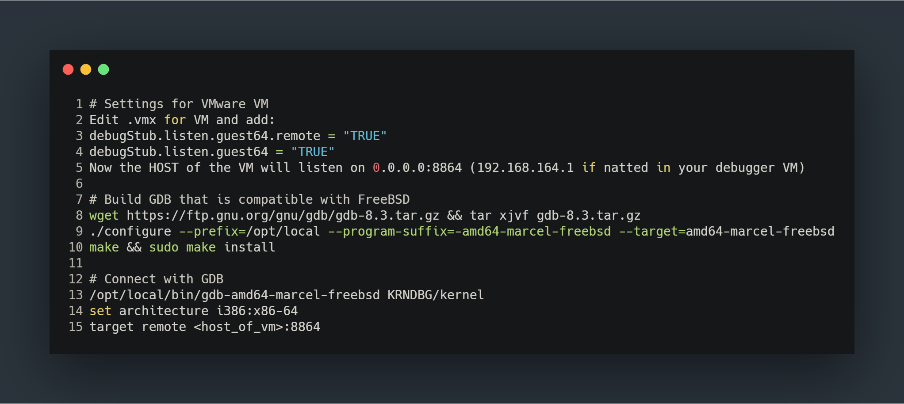

Mattias Karlsson
http://bsd.rce.fun
mk@elakkod.se // mkarlsson@cycura.com
@likvidera

*https://github.com/Cryptogenic
*ioctl, syscalls, userspace/kernel, api
Privilege escalation
Escape sandboxes
Escape jails/containers
Disable selinux and friends or inject into a privileged context
AV-bypass (Shoutout to DUQU)
*Less mitigations than in userspace
Where to start?
*Debug setup, source, etc
Setup Kernel
*VMWare is enough
Setup GDB

To implement one particular ioctl, the Linux emulation code used a special interface present in the cd(4) driver which allows it to copy subchannel information directly to a kernel address. This interface was erroneously made accessible to userland, allowing users with read access to a cd(4) device to arbitrarily overwrite kernel memory when some media is present in the device...
*https://packetstormsecurity.com/files/153522/FreeBSD-Security-Advisory-FreeBSD-SA-19-11.cd_ioctl.html
Bug analysis

Bug analysis II
Exploit primitive

Exploit PoC
Exploit requires the user to be in the operator group
Exploit requries a media to be inserted in the cdrom (* This is not true in virtualization such as VMWare)
Moderatly tricky exploit-primitive but it's reliable
Good opportunity to learn about FreeBSD kernel pwning
*Not a lot of public FreeBSD kernel vulns
*FreeBSD has supported Supervisor Mode Execution Prevention since 2012[6] and Supervisor Mode Access Prevention since 2018
SMEP - Prevent executing in userspace when in supervisor mode
SMAP - Prevent accessing data from userspace when in supervisor mode
KASLR - Randomize kernel loadaddress and data
KPTR_RESTRICT - Hide kernel pointers
*kldsym
Exploit method #1 - Static pointer hijack (shoutout to b0bb)
*Can't overwrite the kernel directly but theres candy in .data
Exploit method #1 - Static pointer hijack

Exploit method #1 - Static pointer hijack
Exploit method #2 - cred corruption

A perfect target

But FreeBSD differs from Linux
Hunt for a cred spray primitive
Use fork+setuid to achieve cred spray
Downsides with this method
Write to non-allocated page, equals panic
Trash an important pointer or data, equals panic
A panic is game-over!
Exploit method #3 - cred corruption with page spraying
1) Fork first to reduce heap-noise
2) Use mmap to vacate most of the available memory on the system
3) Use god_write to mark a specific page, find it and free it
4) Spray cred structs and pray one lands at our target address
Exploit method #3 - cred corruption with page spraying
Exploit method #3 - cred corruption with page spraying

Exploit method #3 - cred corruption with page spraying
Winning!? (1 in 30 to 1 in 5)
Improvements?
create UaF via kernel .data
ADVENT CTF - advent2019.overthewire.org
PWNYRACING - https://pwny.racing
WARGAMES - http://pwnable.kr && http://pwnable.tw
Mattias Karlsson
http://bsd.rce.fun
mk@elakkod.se // mkarlsson@cycura.com
@likvidera